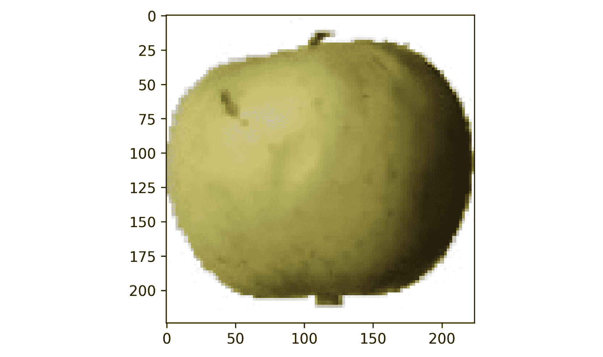
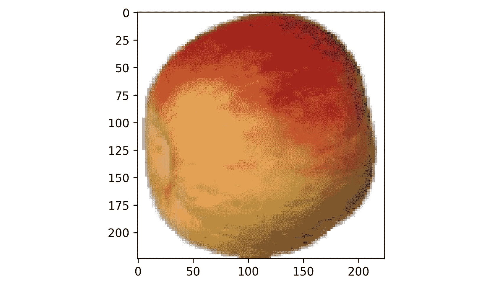
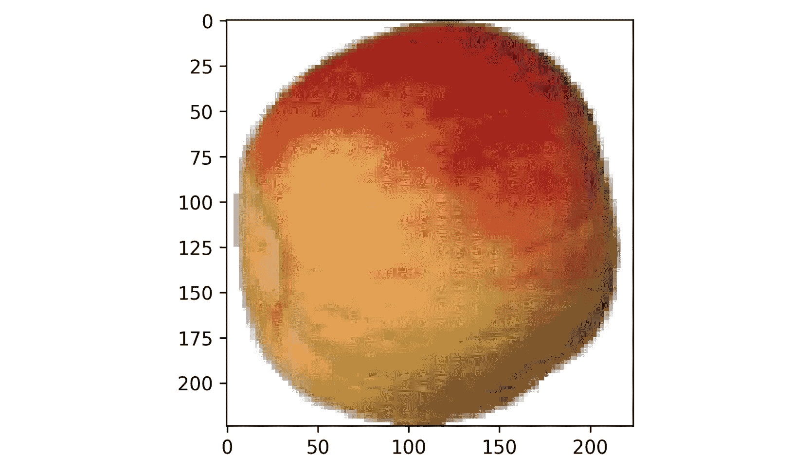
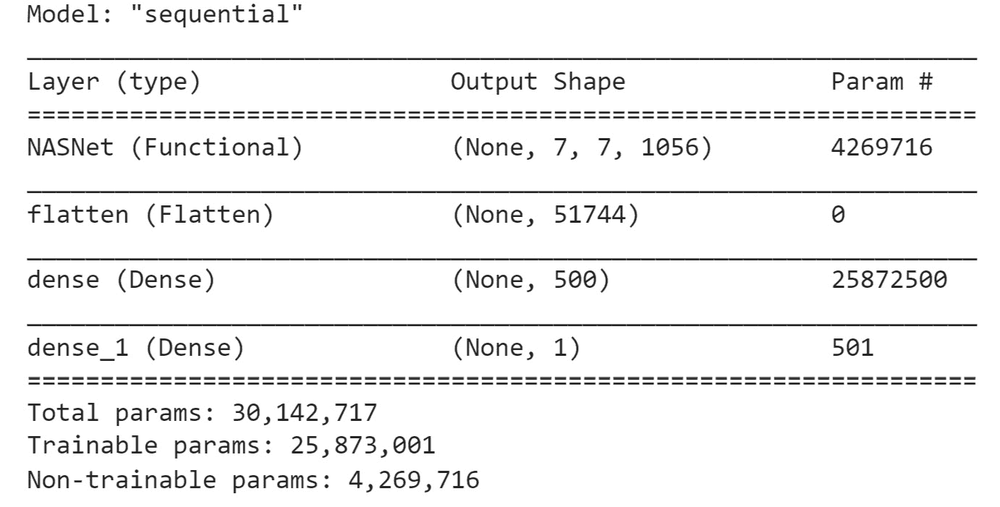
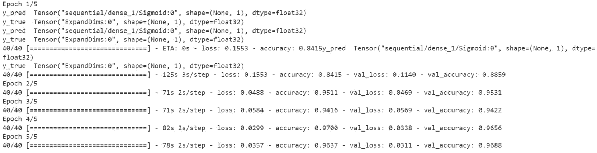
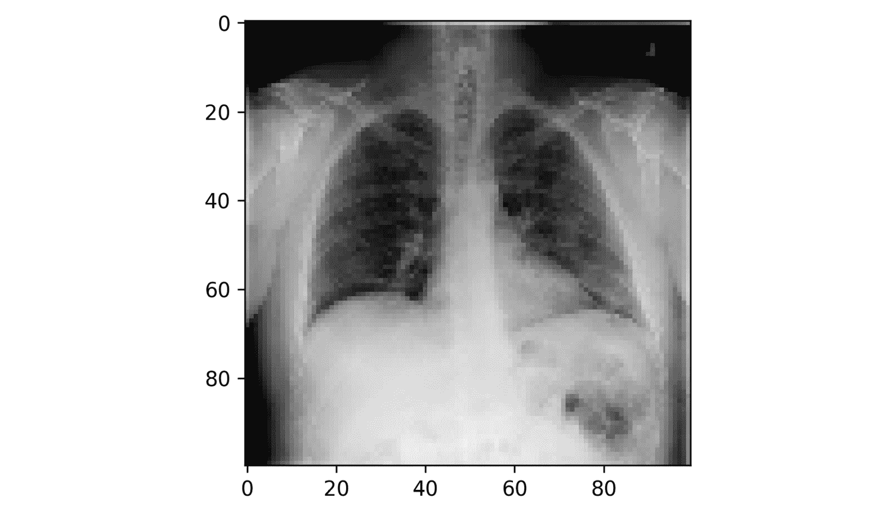
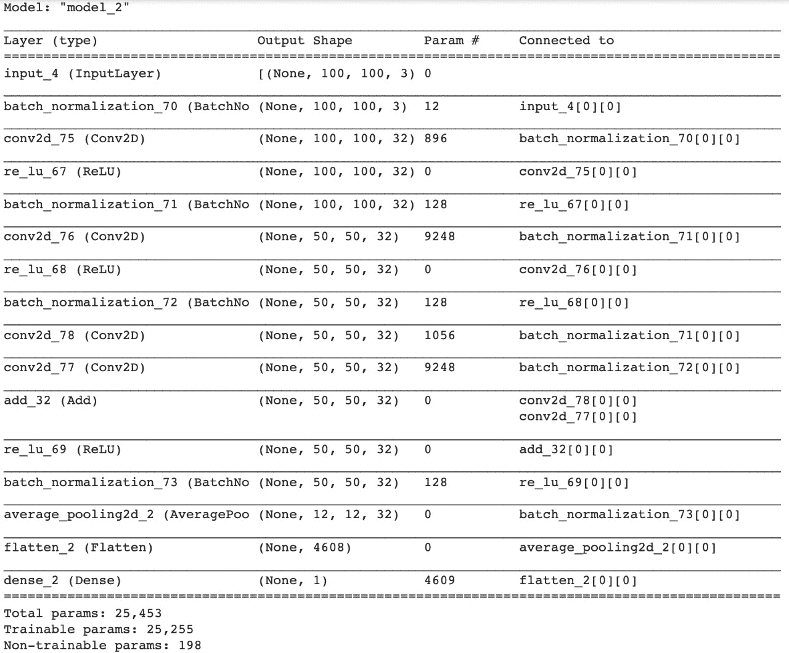
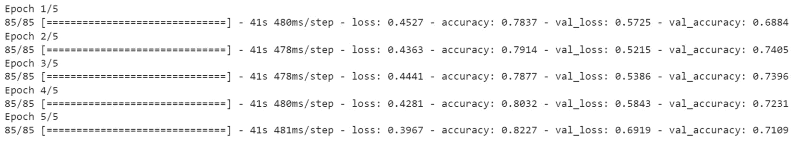

概观
在本章中，您将深入TensorFlow框架并构建自定义模块。结束时，您将知道如何创建自定义张量流组件以在模型中使用，如损失函数和层。
简介
在前面的章节中，您学习了如何从预定义的张量流模块构建CNN或RNN模型。您一直在使用TensorFlow提供的API之一，称为顺序API。这个API是用几行代码开始构建“简单”深度学习架构的好方法。但是，如果您想获得更高的性能，您可能需要构建自己的定制架构。在这种情况下，您将需要使用另一个名为functional API的API。研究人员在定义他们的模型架构时使用功能API。通过学习如何使用它，您将能够创建自定义的损失函数或模块，例如ResNet体系结构中的剩余块。
tensor flow API
使用TensorFlow时，您可以从顺序API、函数API或子类API中进行选择来定义您的模型。对于大多数人来说，顺序API将是首选。然而，随着时间的推移，你接触到更多的复杂性，你的需求也会扩大。
顺序API 是用于创建张量流模型的最简单的API。它的工作原理是将不同的层一层层堆叠起来。例如，您将创建一个顺序模型，其中第一个图层是卷积图层，接下来是分离图层，然后是完全连接图层。该模型是顺序的，因为输入数据将按顺序传递到每个定义的层。
功能API 提供了更多的灵活性。您可以使用不同的层来定义模型，这些层之间的交互不是按顺序进行的。例如，您可以创建两个不同的层，这两个层都将馈入第三个层。这可以通过函数式API轻松实现。
Layer或Model。您可以定义自己的自定义层或模型，但这意味着您需要遵守继承的TensorFlow类的所有要求，例如编码强制方法。
下图简要概述了TensorFlow提供的三种不同的API:
图10.1:显示所有三个API比较的图表
在前面的小节中，您将学习如何定义一个定制的损失函数。
实现自定义损耗功能
有几种类型的损失函数通常用于机器学习。在第五章、分类中，你学习了不同类型的损失函数，并将其用于不同的分类模型。TensorFlow有相当多的内置损失函数可供选择。以下是一些更常见的损失函数:
- 平均绝对误差
- 均方误差
- 二元交叉熵
- 范畴交叉熵
- 关键
- 休伯
- 均方对数误差(MSLE)
快速提醒一下，你可以把损失函数想象成一种指南针，让你清楚地看到什么在算法中起作用，什么不起作用。损失越高，模型越不精确，等等。
虽然TensorFlow有几个可用的损失函数，但在某些时候，您很可能需要根据自己的特定需求创建自己的损失函数。例如，如果您正在构建一个预测股票价格的模型，您希望定义一个损失函数来惩罚实质上不正确的值。
下一节将向您展示如何构建自定义损失函数。
用函数式API构建自定义损失函数
在前面的章节中，您已经了解了如何使用TensorFlow中的预定义损失函数。但是如果你想构建你自己的定制函数，你可以使用函数API或者模型子类化。假设您想要构建一个损失函数，将预测值和实际值之间的差值提高到4的幂:
图10.2:客户损失公式
创建自定义损失函数时，您将始终需要两个参数:y_true(实际值)和y_pred(预测值)。损失函数将计算这两个值之间的差值，并返回一个表示模型预测值与实际值相差多少的误差值。在MAE的情况下，这个损失函数将返回这个误差的绝对值。另一方面，MSE将对实际值和预测值之间的差进行平方。但是在前面的例子中，误差应该被提升到4的幂。
让我们看看如何使用函数式API来实现这一点。首先，您需要使用以下命令导入TensorFlow库:
import tensorflow as tf
然后，您必须创建一个名为custom_loss的函数，它将y_true和y_pred参数作为输入。然后，您将使用pow函数将计算出的误差提升到4的幂。最后，您将返回计算出的误差:
def custom_loss(y_true, y_pred):
custom_loss=tf.math.pow(y_true - y_pred, 4)
return custom_loss
您已经使用函数式API创建了自己的定制损失函数。现在，在训练模型之前，您可以将它传递给compile方法，而不是预定义的损失函数:
model.compile(loss=custom_loss,optimizer=optimizer)
在这之后，你可以用和前几章完全一样的方法训练你的模型。TensorFlow将使用您的自定义损失函数来优化您的模型的学习过程。
用子类化API构建自定义损失函数
还有另一种定义自定义损失函数的方法:使用子类化API。在这种情况下，您将为它定义一个自定义类，而不是构建一个函数。如果您想用额外的自定义属性或方法来扩展它，这是非常有用的。通过子类化，您可以创建一个自定义类，它将从keras.losses模块的Loss类继承属性和方法。然后你需要定义__init__()和call()方法，这在Loss类中是必需的。在__init__方法中，您将定义自定义类的所有属性，在call()方法中，您将指定计算损失的逻辑。
下面是一个简单的例子，说明如何使用子类化API来实现定制的loss，其中错误应该被提升到4的幂:
class MyCustomLoss(keras.losses.Loss):
def __init__(self, threshold=1.0, **kwargs):
super().__init__(**kwargs)
def call(self, y_true, y_pred):
return tf.math.pow(y_true - y_pred, 4)
在前面的例子中，您已经重新实现了与前面相同的损失函数(4的幂)，但是使用了来自keras.losses.Loss的子类。首先，在__init__()方法中使用self参数初始化您的类的属性，该参数引用对象本身。
然后，在call()方法中，您定义了损失函数的逻辑，它计算了误差并将其提升到4的幂。
现在您已经熟悉了损失函数，是时候在下一个练习中构建一个了。
练习10.01:构建自定义损失函数
在本练习中，您将创建自己的自定义损失函数来训练CNN模型，以区分苹果和西红柿的图像。
在本练习中，您将使用Apple-or-Tomato数据集。该数据集是GitHub上Fruits 360数据集的子集。Fruits 360数据集由1948幅尺寸为100×100像素的彩色图像组成。Apple-or-Tomato数据集有992个苹果图像，其中662个在训练集中，330个在测试数据集中。总共有956幅番茄图像，其中638幅在训练数据集中，318幅在测试数据集中。
注
您可以在以下链接获得Apple-or-Tomato数据集:【https://packt.link/28kZY T21】。
可以在这里找到Fruits 360数据集:https://github . com/horea 94/Fruit-Images-Dataset/archive/master . zip。
首先，打开一个新的Colab或Jupyter笔记本。如果您正在使用Google Colab，您需要首先将数据集下载到您的Google Drive中:
- 打开新的Jupyter笔记本或Google Colab笔记本。
- 如果您使用Google Colab，使用以下代码在本地上传您的数据集。否则，转到步骤4 。点击
Choose Files导航至CSV文件，然后点击Open。将文件另存为uploaded。然后，转到保存数据集的文件夹:from google.colab import files uploaded = files.upload()
- 将数据集解压到当前文件夹:
!unzip \*.zip
- 创建一个变量
directory，它包含数据集的路径:directory = "/content/gdrive/My Drive/Datasets/apple-or-tomato/"
- 导入
pathlib库:import pathlib
- 使用
pathlib.Path:path = pathlib.Path(directory)
创建一个包含数据集完整路径的变量path - 创建两个变量
train_dir和validation_dir，它们分别采用训练和验证文件夹的完整路径:train_dir = path / 'training_set' validation_dir = path / 'test_set'
- 创建四个变量，
train_apple_dir、train_tomato_dir、validation_apple_dir和validation_tomato_dir，它们分别采用训练集和验证集的apple和tomato文件夹的完整路径:train_apple_dir = train_dir / 'apple' train_tomato_dir = train_dir /'tomato' validation_apple_dir = validation_dir / 'apple' validation_tomato_dir = validation_dir / 'tomato'
- 导入
os包:import os
- 创建两个名为
total_train和total_val的变量，这两个变量将分别获得训练集和验证集的图像数量:total_train = len(os.listdir(train_apple_dir)) + \ len(os.listdir(train_tomato_dir)) total_val = len(os.listdir(validation_apple_dir)) + \ len(os.listdir(validation_tomato_dir))
- 从
tensorflow.keras.preprocessing模块导入ImageDataGenerator:from tensorflow.keras.preprocessing.image import ImageDataGenerator
- 实例化两个
ImageDataGenerator类，train_image_generator和validation_image_generator，这将通过除以255来重新缩放图像:train_image_generator = ImageDataGenerator(rescale=1./255) validation_image_generator = ImageDataGenerator(rescale=1./255)
- 创建三个名为
batch_size、img_height和img_width的变量，分别取值为32、224和224:batch_size = 32 img_height = 224 img_width = 224
- 使用
flow_from_directory()创建一个名为train_data_gen的数据生成器，并指定批处理大小、训练文件夹的路径、shuffle参数的值、目标的大小和上课模式:train_data_gen = train_image_generator.flow_from_directory\ (batch_size=batch_size, directory=train_dir, \ shuffle=True, \ target_size=(img_height, img_width), \ class_mode='binary')
- 使用
flow_from_directory()创建一个名为val_data_gen的数据生成器，并指定批处理大小、验证文件夹的路径、目标的大小和类模式:val_data_gen = validation_image_generator.flow_from_directory\ (batch_size=batch_size, directory=validation_dir, \ target_size=(img_height, img_width), \ class_mode='binary')
- Import
matplotliband create aforloop that will iterate through five images fromtrain_data_genand plot them:import matplotlib.pyplot as plt for _ in range(5): img, label = train_data_gen.next() plt.imshow(img[0]) plt.show()您应该得到以下输出:
 
图10.3:数据集中的图像样本
上述结果显示了此数据集中包含的一些图像示例。
- 导入张量流库:
import tensorflow as tf
- 创建您的自定义损失函数，该函数将计算误差的平方:
def custom_loss_function(y_true, y_pred): print("y_pred ",y_pred) print("y_true ", y_true) squared_difference = tf.square(float(y_true)-float(y_pred)) return tf.reduce_mean(squared_difference, axis=-1) - 从
tensorflow.keras.applications模块导入NASNetMobile模型:from tensorflow.keras.applications import NASNetMobile
- 使用ImageNet权重实例化该模型，移除顶层，并指定正确的输入维度:
base_model = NASNetMobile(include_top=False,\ input_shape=(100, 100, 3), \ weights='imagenet')
- 冻结该模型的所有层，这样就不会更新
NASNetMobile:base_model.trainable = False
的模型权重 - 从
tensorflow.keras.layers模块from tensorflow.keras.layers import Flatten, Dense
导入Flatten和Dense图层 - 创建一个新的模型，将
NASNetMobile模型与两个新的顶层(分别为500和1个单位)以及ReLu和sigmoid组合起来作为激活函数:model = tf.keras.Sequential([ base_model, layers.Flatten(), layers.Dense(500, activation='relu'), layers.Dense(1, activation='sigmoid') ])
- Print the summary of your model:
model.summary()
您将获得以下输出:
图10.4:模型总结
在这里，你可以看到左手边的层。你已经展示了
Output Shape，例如(None, 224, 224, 3)。然后，参数的数量显示在Param #下。在底部，您会发现摘要，包括可训练和不可训练的参数。 - 通过提供您的自定义损失函数来编译此模型，Adam作为优化器，准确性作为要显示的度量:
model.compile( optimizer='adam', loss=custom_loss_function, metrics=['accuracy'])
- Fit the model and provide the train and validation data generators, the number of steps per epoch, and the number of validation steps:
history = model.fit( Train_data_gen, steps_per_epoch=total_train // batch_size, epochs=5, validation_data=val_data_gen, validation_steps=total_val // batch_size)您应该得到以下输出:

图10.5:培训进度截图
前面的屏幕截图显示了TensorFlow在模型训练期间显示的信息。您可以看到每个时期的训练集和验证集所达到的精确度。在第五个时期，模型在训练集和验证集上都是96%准确的。
在本练习中，您已经成功构建了自己的损失函数，并用它训练了一个二元分类器来识别苹果或西红柿的图像。在下一节中，您将更进一步，构建您自己的自定义层。
实现自定义图层
之前，您研究了用TensorFlow函数式API或子类化方法实现您自己的定制损失函数。这些概念也可以应用于为深度学习模型创建自定义层。在本节中，您将从头开始构建一个ResNet模块。
ResNet块简介
残差神经网络，或 ResNet ，由何于2015年在其论文图像识别的深度残差学习中首次提出。他引入了一个称为残差块的新概念，以解决梯度消失的问题，这限制了训练非常深的网络(有很多层)的能力。
残差块由多层组成。但是残差块包含两个不同的路径，而不是具有每层被堆叠并顺序执行的单个路径。第一条路径有两个不同的卷积层。第二条路径称为跳过连接，它接收输入并将其转发到第一条路径的最后一层。因此，残差块的输入将通过具有卷积层序列的第一路径，其结果将与来自第二路径的原始输入合并(跳过连接)，如图图10.6 所示。无需过多考虑数学细节，这条额外的路径允许架构通过更深层次的梯度，而不会影响整体性能。
图10.6:跳过连接
如您所见，如果您想为前面的剩余块构建一个架构，使用TensorFlow顺序API会非常困难。在这里，你需要建立一个非常定制的层。这就是为什么你需要使用函数API或者模型子类化的原因。
使用功能API构建定制层
在本节中，您将看到如何使用TensorFlow functional API来构建自定义层。
首先，您将构建一个函数，该函数将您的输入作为张量，并向其添加ReLU和批量规范化。例如，在下面的代码片段中，relu_batchnorm_layer函数接受输入，然后返回一个张量。这就形成了一个连续进行ReLU激活和批量标准化的复合层:
def relu_batchnorm_layer(input):
return BatchNormalization()(ReLU()(input))
现在，为你的剩余块创建一个函数。您需要将一个张量作为输入，并将其传递给两个Conv2D层。然后，将第二个Conv2D层的输出添加到原始输入，表示跳过连接。这个加法的输出将被传递给您在前面的代码片段中定义的relu_batchnorm_layer()函数。输出将提供给另一个Conv2D层:
def simple_residual_block(input, filters: int, kernel_size: int = 3):
int_output = Conv2D(filters=filters, kernel_size=kernel_size,
padding="same")(input)
int_output = Conv2D(filters=filters, kernel_size=1, strides=2,
padding="same")(int_output)
output = Add()([int_output,input])
output = relu_batchnorm_layer(output)
return output
现在，您可以在您的模型中使用这个自定义层。在下面的代码片段中，您将定义一个简单的模型，该模型带有一个Conv2D层，后跟一个残差块:
inputs = Input(shape=(100, 100, 3))
num_filters = 32
t = BatchNormalization()(inputs)
t = Conv2D(kernel_size=3,
strides=1,
filters=32,
padding="same")(t)
t = relu_batchnorm_layer(t)
t = residual_block(t, filters=num_filters)
t = AveragePooling2D(4)(t)
t = Flatten()(t)
outputs = Dense(1, activation='sigmoid')(t)
model = Model(inputs, outputs)
现在让我们在下一节中使用子类化来构建自定义层。
使用子类化构建自定义层
之前，您已经了解了如何使用函数式API创建残差块的简化版本。现在，您将看到如何使用模型子类化来创建自定义层。
首先，您需要将Model类和几个层一起导入:
from tensorflow.keras.models import Model from tensorflow.keras.layers import Dense, Dropout, Softmax, concatenate
然后，使用模型子类化创建一个具有两个密集层的模型。首先，定义一个表示为MyModel的模型子类。您将从此类生成的对象是具有两个密集层的模型。
在init方法中定义两个密集层。例如，第一个可以有64单元和ReLU激活功能，而第二个可以有10单元而没有激活功能(在这种情况下，使用的默认激活功能是线性的)。在这之后，在call方法中，您通过调用先前定义的密集层来设置向前传递。首先，您可以放置dense_1层来获取输入，然后放置dense_2层来返回该层的输出:
class MyModel(Model):
def __init__(self):
super(MyModel, self).__init__()
self.dense_1 = Dense(64, activation='relu')
self.dense_2 = Dense(10)
def call(self, inputs):,
X = self.dense_1(inputs)
return self.dense_2(X)
下一步是实例化模型。为此，只需调用括号内没有参数的类。接下来，调用随机输入的模型来创建权重。对于输入，这个例子使用一个带有10元素的一维向量，但是可以随意使用不同的输入。然后，您可以打印模型的摘要，从中可以看到您之前定义的密集层。
考虑以下模型摘要:
model = MyModel() model(tf.random.uniform([1,10])) model.summary()
结果输出应该如下所示:
图10.7:模型总结
现在，您可以通过包含一个名为training的关键字参数来修改call方法。如果你想在训练和推理中有不同的行为，这是很有用的。例如，您可以创建一个仅当training为true时才会被激活的脱离层。首先，给定你的学习速率0.4，你需要在init方法中定义一个辍学层。然后，在call方法中，编写一个if子句，默认情况下training关键字设置为true。在它里面，只需要调用dropout层:
class MyModel(Model):
def __init__(self):
super(MyModel, self).__init__()
self.dense_1 = Dense(64, activation='relu')
self.dense_2 = Dense(10)
self.dropout = Dropout(0.4)
def call(self, inputs, training=True):
X = self.dense_1(inputs)
if training:
X = self.dropout(X)
return self.dense_2(X)
现在，考虑模型摘要:
model = MyModel() model(tf.random.uniform([1,10])) model.summary()
运行前面的命令后，摘要显示如下:
图10.8:模型总结
在以下练习中，您将构建一个自定义图层。
练习10.02:构建自定义图层
Healthy-Pneumonia数据集是National Institute for Health NIH数据集的子集。该数据集由9，930幅尺寸为100×100像素的彩色图像组成。pneumonia-or-healthy数据集总共有1965幅健康图像，其中1375幅图像在训练数据集中，590幅图像在测试数据集中。
您将创建一个自定义ResNet块，它由一个Conv2D层、一个批处理规范化层和一个ReLU激活函数组成。您将对图像执行二元分类，以区分健康图像和肺炎图像。
注意
你可以在这里得到pneumonia-or-healthy数据集:https://packt.link/IOpUX。
首先，打开一个新的Colab或Jupyter笔记本。如果您正在使用Google Colab，您需要首先将数据集下载到您的Google Drive中:
- 打开新的Jupyter笔记本或Google Colab。
- 如果您正在使用Google Colab，您可以使用以下代码在本地上传您的数据集。否则，转到步骤4 。点击
Choose Files导航至CSV文件，然后点击Open。将文件另存为uploaded。然后，转到保存数据集的文件夹:from google.colab import files uploaded = files.upload()
- 将数据集解压到当前文件夹:
!unzip \*.zip
- 创建一个变量
directory，它包含数据集的路径:directory = "/content/gdrive/My Drive/Datasets/pneumonia-or-healthy/"
- 导入
pathlib库:import pathlib
- 使用
pathlib.Path:path = pathlib.Path(directory)
创建一个包含数据完整路径的变量path - 创建两个名为
train_dir和validation_dir的变量，它们分别采用train和validation文件夹的完整路径:train_dir = path / 'training_set' validation_dir = path / 'test_set'
- 创建四个名为
train_healthy_dir、train_pneumonia_dir、validation_healthy_dir和validation_pneumonia_dir的变量，它们分别采用训练集和验证集的健康和肺炎文件夹的完整路径:train_healthy_dir = train_dir / 'healthy' train_pneumonia_dir = train_dir /'pneumonia' validation_healthy_dir = validation_dir / 'healthy' validation_pneumonia_dir = validation_dir / 'pneumonia'
- 导入
os包:import os
- 创建两个变量
total_train和total_val，分别获取训练集和验证集的图像数量:total_train = len(os.listdir(train_healthy_dir)) + \ len(os.listdir(train_pneumonia_dir)) total_val = len(os.listdir(validation_healthy_dir)) + \ len(os.listdir(validation_pneumonia_dir))
- 从
tensorflow.keras.preprocessing:from tensorflow.keras.preprocessing.image import ImageDataGenerator
导入ImageDataGenerator - 实例化两个
ImageDataGenerator类，并将其命名为train_image_generator和validation_image_generator，这将通过除以255来重新缩放图像:train_image_generator = ImageDataGenerator(rescale=1./255) validation_image_generator = ImageDataGenerator(rescale=1./255)
- 创建三个名为
batch_size、img_height和img_width的变量，分别取值为32、100和100:batch_size = 32 img_height = 100 img_width = 100
- 使用
flow_from_directory()创建一个名为train_data_gen的数据生成器，并指定批处理大小、训练文件夹的路径、shuffle参数的值、目标的大小和课程模式:train_data_gen = train_image_generator.flow_from_directory\ (batch_size=batch_size, directory=train_dir, \ shuffle=True, \ target_size=(img_height, img_width), \ class_mode='binary')
- 使用
flow_from_directory()创建一个名为val_data_gen的数据生成器，并指定批处理大小、验证文件夹的路径、目标的大小和类模式:val_data_gen = validation_image_generator.flow_from_directory\ (batch_size=batch_size, directory=validation_dir, \ target_size=(img_height, img_width), \ class_mode='binary')
- Import
matplotliband create aforloop that will iterate through five images fromtrain_data_genand plot them:import matplotlib.pyplot as plt for _ in range(5): img, label = train_data_gen.next() plt.imshow(img[0]) plt.show()您应该会看到以下输出:


图10.9:数据集中的图像样本
上述结果显示了此数据集中包含的一些图像示例。
- 导入张量流库:
import tensorflow as tf
- 导入
Input、Conv2D、ReLU、BatchNormalization、Add、AveragePooling2D、Flatten、Dense:from tensorflow.keras.layers import Input, Conv2D, ReLU, \ BatchNormalization, Add, \ AveragePooling2D, Flatten, Dense
- 构建一个函数，将您的输入作为张量，并添加ReLU和批量标准化:
def relu_batchnorm_layer(input): return BatchNormalization()(ReLU()(input))
- 创建一个函数来构建您的剩余块。您需要将一个张量(
input)作为您的输入，并以2的步幅将其传递给两个Conv2D层。接下来，将输入与输出相加，然后进行ReLU和批量归一化，返回一个张量。用kernel_size=1再添加一个Conv2D层。将其结果添加到前一个Conv2D层的输出中。最后，应用relu_batchnorm_layer()并返回其值。您将对所有Conv2D层应用完全相同的过滤器(数量和尺寸由构造函数的两个输入参数定义):def residual_block(input, filters: int, kernel_size: int = 3): int_output = Conv2D(filters=filters, kernel_size=kernel_size, strides=(2), padding="same")(input) int_output = relu_batchnorm_layer(int_output) int_output = Conv2D(filters=filters, kernel_size=kernel_size, padding="same")(int_output) int_output2 = Conv2D(filters=filters, kernel_size=1, strides=2, padding="same")(input) output = Add()([int_output2, int_output]) output = relu_batchnorm_layer(output) return output
- 导入
Model模块:from tensorflow.keras.models import Model
- 使用
keras.layers.Input()定义模型的输入层。这里，你的形状是100像素乘100像素，有三种颜色(RGB):inputs = Input(shape=(100, 100, 3))
- 对输入应用批处理归一化，然后是一个Conv2D层，具有大小为
3*3的32滤镜、步幅1和same填充。最后，将relu_batchnorm_layer()函数应用到它的输出:t = BatchNormalization()(inputs) t = Conv2D(kernel_size=3, strides=1, filters=32, padding="same")(t) t = relu_batchnorm_layer(t)
- 用
32滤波器将前一层的输出提供给residual_block()功能。然后，将它的输出传递给一个有四个单元的平均池层，然后在将它馈送给一个以sigmoid为激活函数的1单元的全连接层之前，展平它的结果:t = residual_block(t, filters=32) t = AveragePooling2D(4)(t) t = Flatten()(t) outputs = Dense(1, activation='sigmoid')(t)
- 用原始输入和全连接层的输出实例化一个
Model()类:model = Model(inputs, outputs)
- Get the summary of your model:
model.summary()
您将看到一个摘要，包括可训练和不可训练的参数，如下所示:
图10.10:模型总结
- 通过提供二进制交叉熵作为损失函数、Adam作为优化器、准确性作为要显示的度量来编译模型:
model.compile( optimizer='adam', loss=binary_crossentropy, metrics=['accuracy'])
- Fit the model and provide the train and validation data generators, the number of epochs, the steps per epoch, and the validation steps:
history = model.fit( Train_data_gen, steps_per_epoch=total_train // batch_size, epochs=5, validation_data=val_data_gen, validation_steps=total_val // batch_size )您应该得到如下输出:

图10.11:培训进度截图
前面的屏幕截图显示了TensorFlow在模型训练期间显示的信息。您可以看到每个时期的训练集和验证集所达到的精确度。
在本练习中，您为网络创建了自己的自定义图层。现在，让我们在下面的活动中测试一下到目前为止你已经掌握的知识。
活动10.01:使用自定义图层和自定义损失函数构建模型
table-or-glass数据集是取自Open Images V6数据集的图像子集。Open Images V6数据集大约有900万张图片。table-or-glass数据集由7，484幅尺寸为100×100像素的彩色图像组成。table-or-glass数据集总共有3741幅玻璃图像，其中2618幅在训练数据集中，1123幅在测试数据集中。总共有3，743个表图像，其中2，618个在训练数据集中，1，125个在测试数据集中。您需要训练一个更复杂的模型，该模型可以使用自定义ResNet块和自定义损失函数来区分眼镜和桌子的图像。
注意
你可以在这里找到数据集:https://packt.link/bE5F6。
以下步骤将帮助您完成此活动:
- 导入数据集并将文件解压缩到本地文件夹中。
- 为训练集和测试集创建图像列表。
- 分析目标变量的分布。
- 对图像进行预处理(标准化和整形)。
- 创建一个自定义损失函数来计算均方差。
- 创建自定义剩余块构造函数。
- 训练你的模型。
- Print the learning curves for accuracy and loss.
注意
此活动的解决方案可通过此链接找到。
总结
本章演示了如何构建和利用自定义TensorFlow组件。您学习了如何设计和实现自定义损失函数、层和残差块。使用TensorFlow函数式API或模型子类化允许您构建更复杂的深度学习模型，这些模型可能更适合您的项目。
在下一章也是最后一章，您将探索和构建生成模型，这些模型可以学习数据中的模式和关系，并使用这些关系生成新的、唯一的数据。